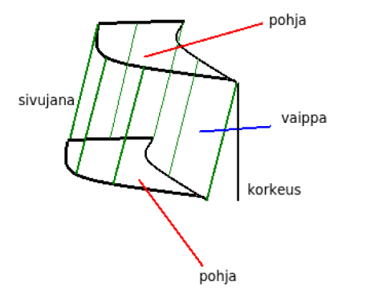
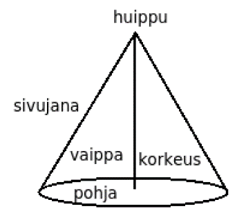
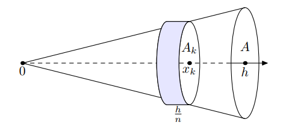

Lieriö ja kartio
Contents
Lieriö ja kartio¶
Lieriö ja kartio eivät ehkä ole arkipäiväisiä ilmaisuja, mutta muotoina ne ovat kyllä yleisiä. Esimerkiksi kahvimukin sisäpuoli on yleensä jossain määrin lieriön, tai ehkäpä katkaistun kartion, mallinen. Näiden muotojen avulla voi mallintaa myös esimerkiksi jäävuoria, tukkipuuta tai sorakasoja.
Lieriö¶

Lieriön osiin kuuluu kaksi samanlaista pohjaa, pohjia yhdistävät sivujanat, ja sivujanojen muodostama vaikka. Lieriön korkeus h on pohjien kohtisuora etäisyys. Suorassa lieriössä sivujanat ovat yhtä pitkät kuin lieriön korkeus. Ympyrälieriön pohjat ovat ympyröitä. Prisma on lieriö, jonka pohja on monikulmio.
Lieriön tilavuus saadaan laskemalla pohjan alan \(A\) ja korkeuden \(h\) tulo, \(V=Ah\). Lieriön muodosta riippuu, millä laskukaavalla pohjan ala lasketaan.
Esim. Oletetaan, että Pisan kalteva torni on muodoltaan ympyrälieriö, jonka korkeus (kohtisuoraan maasta huipulle) on 55.9 metriä ja pohjan halkaisija 15.5 metriä. Laske tornin tilavuus.
Ratkaisu
Tornin tilavuus on \(V=Ah=\pi r^2 h= \pi \cdot \left(\frac{15.5}{2}~\text{m}\right)^2\cdot 55.9~\text{m} \approx 10500~\text{m}^3\).
Kartio¶

Kartion osia ovat pohja (ala \(A\)), huippu ja sivujanat. Sivujanat muodostavat kartion vaipan ja yhdistyvät kartion huipulla. Kartion korkeus \(h\) on kohtisuora etäisyys huipulta pohjalle. Suoran kartion korkeus on sama kuin etäisyys huipulta pohjan keskipisteeseen. Ympyräkartio on kartio, jonka pohja on ympyrä. Pyramidi on kartio, jonka pohja on monikulmio.
Kartion tilavuudelle voidaan johtaa laskukaava \(V=\frac{1}{3} Ah\).
Perustelu
Kartion tilavuuden kaavan voi johtaa esimerkiksi siten, että “sahataan” kartio kiekoiksi, joiden pinta-ala on sitä pienempi, mitä korkeammalla ne ovat kartiossa. Kun kiekot ovat ohuita, niiden voidaan ajatella olevan lieriömäisiä. Jokaisella kiekolla on tietty pinta-ala ja tietty paksuus, jolloin kartion tilavuuden saisi laskettua näiden kiekkojen tilavuuksien summana. Kartion sahaaminen äärettömän moneen, äärettömän ohueen, kiekkoon tapahtuu matemaattisesti integraalilaskennan avulla.

Matematiikkalehti Solmussa on esitetty samantapainen perustelu kartion tilavuuden kaavalle. Jokaisen kiekon ala on verrannollinen kartion leveyden toiseen potenssiin kyseisen kiekon kohdalla. Koska kartio levenee kärjestä pohjaa kohti tasaisesti, niin \(k\):nnen kiekon halkaisija on verrannollinen sen sijaintiin \(n\):n kiekon pinossa. Tietystä kohtaa “sahatun” kiekon alan \(A_k\) suhde kartion pohjan alaan \(A\) on siis verrannollinen kiekon sijainnin toiseen potenssiin:
\(\frac{A_k}{A}=\left(\frac{k}{n}\right)^2\)
Tästä saadaan ratkaistua \(A_k=A \left(\frac{k}{n}\right)^2 \)
Jos kartion korkeus on \(h\) ja se on jaettu \(n\) kiekkoon, niin jokaisen kiekon paksuus on \(\frac{h}{n}\). Kohdassa \(k\) olevan kiekon tilavuus on kyseisen kiekon ala kerrottuna kiekon paksuudella \(\frac{h}{n}\), siis
\(V_k=A_k \frac{h}{n}= A \left(\frac{k}{n}\right)^2 \frac{h}{n} = A \frac{k^2 h}{n^3}, k=1,2, \ldots n\).
Näitä kiekkoja on yhteensä \(n\) kappaletta. Koko kartion tilavuus kuvan mukaisesti on pienempi kuin kartioiden kattava ala, joten \(V < A \frac{1^2 h}{n^3} + A \frac{2^2 h}{n^3} + \ldots A \frac{n^2 h}{n^3}\)
Oikea puoli voidaan sieventää yhteisen tekijän avulla, joten
\(V < A \frac{h}{n^3} (1^2 + 2^2 + \ldots n^2)\)
Suluissa oleva summa voidaan (parin lukiotasoisen oppitunnin jälkeen) esittää muodossa \(\frac{1}{6}\cdot 2(n+1)(2n+1)\), jolloin tilavuuden ylärajaksi tulee
\(V < A \frac{h}{n^3} \cdot \frac{1}{6}\cdot 2(n+1)(2n+1)\)
joka edelleen voidaan muokata muotoon
\(V < \frac{Ah}{6} \cdot(2+\frac{1}{n^2}+\frac{3}{n})\).
Kartion tilavuuden yläraja saadaan asettamalla kiekkojen määrä äärettömäksi. Kiekkojen määrä ei oikeastaan voi olla ääretön, mutta se voi kyllä lähestyä ääretöntä. Kun \(n\) lähestyy ääretöntä, niin termit \(\frac{1}{n^2}\) ja \(\frac{3}{n}\) lähestyvät nollaa. Tällöin tilavuuden yläraja lähestyy lukua
\(V < \frac{Ah}{6}\cdot 2 = \frac{1}{3}Ah\).
Vastaavanlaisella päättelyllä, mutta määrittämällä kiekot kartion “sisäpuolelle”, saataisiin kartion tilavuudelle määritettyä yhtä suuri alaraja. Tällöin siis kartion pitää olla tasan yhtä suuri kuin \(\frac{1}{3}Ah\).
Esim. Popcornia pakataan suoran ympyräkartion muotoiseen pahviastiaan, jonka korkeus on 20 cm ja pohjaympyrän halkaisija 14 cm. Jos sama määrä popcornia pakattaisiin yhtä korkeaan neliöpohjaisen pyramidin muotoiseen astiaan, niin kuinka pitkä olisi pyramidin pohjana olevan neliön sivu \(x\)?
Ratkaisu
Kirjoitetaan yhtälö, jossa toisella puolella on pyramidin tilavuus ja toisella puolella ympyräkartion tilavuus:
\(\frac{1}{3} x^2 \cdot 20~\text{cm}=\frac{1}{3} \pi \cdot \left(\frac{14}{2}~\text{cm}\right)^2\cdot 20~\text{cm}\)
Kertoimet \(\frac{1}{3}\) saadaan pois kertomalla yhtälön molemmat puolet luvulla 3. Vastaavasti kertoimet 20 saadaan pois jakamalla molemmat puolet luvulla 20. Tämän jälkeen voidaan helposti ratkaista
\(x=\sqrt{\pi \cdot 7^2~\text{cm}^2} \leftrightarrow x=12.4~\text{cm}\)
Katkaistu kartio on nimensä mukaisesti kartio, josta on katkaistu kärki pois. Tällaisella kartiossa on kaksi pohjaa, joiden alat ovat \(A_1\) ja \(A_2\). Katkaistua kartiota voidaan käyttää mallina esim. puutukin tilavuuden laskemiseen. Puuthan ovat yleensä tyvestä paksumpia kuin latvasta.
Katkaistun kartion tilavuus on \(V=\frac{1}{3}h (A_1+ \sqrt{A_1 A_2} +A_2 )\)
Perustelu
Katkaistun kartion tilavuuden kaava on käsitteellisesti helppo, mutta algebrallisesti hieman työläs johtaa. Olkoon kokonaisen kartion korkeus \(H\), jäljelle jääneen alaosan korkeus \(h\) ja katkaistun osan pituus \(H-h\). Merkitään kartion suurempaa pohjaa \(A_1\) ja pienempää pohjaa, eli pois katkaistun kartion pohjaa, \(A_2\). Katkaistun kartion tilavuus saadaan, kun kokonaisen kartion tilavuudesta vähennetään yläosa:
\(V=\frac{1}{3}A_1 H - \frac{1}{3}A_2 (H-h)\)
\(V=\frac{1}{3}A_1 H - \frac{1}{3}A_2 H +\frac{1}{3}A_2 h\)
Muokataan yhtälö vielä muotoon \(V=\frac{1}{3} \left((A_1-A_2)H + A_2 h\right)\).
Koska kokonainen ja pois katkaistu kartio ovat yhdenmuotoisia, niiden pohjien aloille pätee \(\frac{A_2}{A_1}=\frac{(H-h)^2}{h^2}\). Yhtälön oikea puoli on korotettu potenssiin 2, koska pohjien mitat (esim. ympyränmuotoisen pohjan säteet) ovat verrannollisia kartioiden korkeukseen, mutta pinta-alat ovat verrannollisia näiden mittojen toiseen potenssiin.
Edellisestä yhtälöstä saadaan muutaman välivaiheen kautta ratkaistua \(H=h\left(\frac{A_1+\sqrt{A_1 A_2}}{A_1-A_2}\right)\). Sijoitetaan tämä tilavuuden yhtälöön ja sievennetään:
\(V=\frac{1}{3} \left((A_1-A_2) \cdot h \cdot \frac{A_1+\sqrt{A_1 A_2}}{A_1-A_2} + A_2 h\right)\)
\(V=\frac{1}{3} \left(h(A_1+\sqrt{A_1 A_2}) + A_2 h\right)\)
\(V=\frac{1}{3} h (A_1+\sqrt{A_1 A_2} + A_2)\)
Esim. Puutukin pituus on 6 metriä. Tyvipään halkaisija on 40 cm ja latvapään halkaisija 20 cm. Laske tukin tilavuus kuutiometreinä.
Ratkaisu
Pohjien säteet ovat puolet halkaisijoista, siis metreinä ilmaistuna 0.2 m ja 0.1 m. Tukin tilavuus on
\(V=\frac{1}{3} \cdot 6~\text{m}\cdot \left(\pi\cdot (0.2~\text{m})^2+\sqrt {(\pi \cdot (0.2 ~\text{m})^2 \cdot \pi \cdot (0.1~\text{m})^2}+ \pi\cdot (0.1~\text{m})^2\right)\)
\(V=0.44~\text{m}^3\).